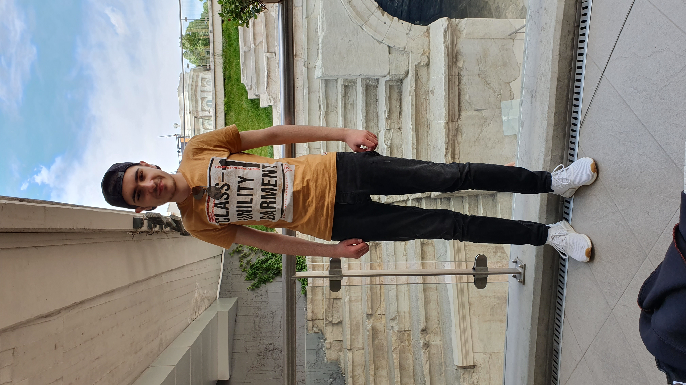
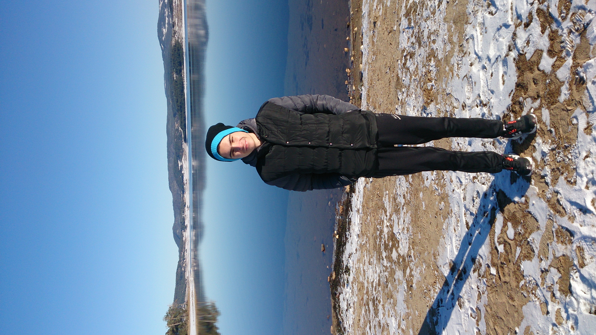
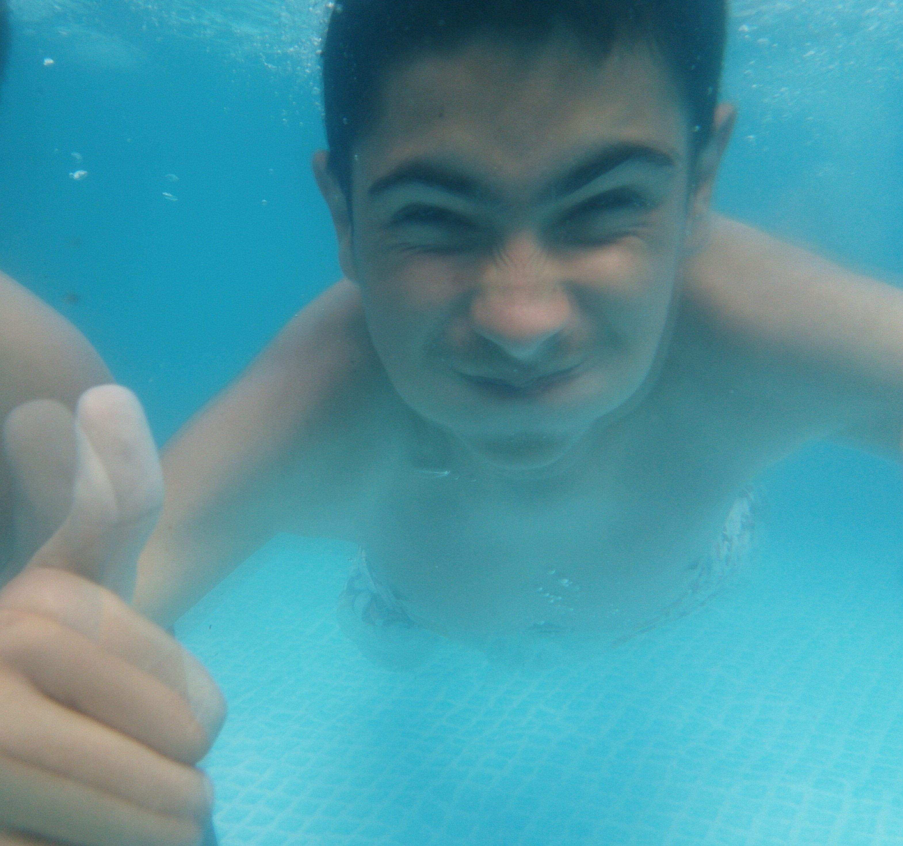

Роден съм през 1997 година в град Пазарджик.
Завърших основното си образование в Проф. Иван Батаклиев,
след което получих средно-специалното си образование в:
Професионална гимназия по икономика и мениджмънт "ПГИМ" със специалност: Икономическа информатика.
В момента уча 2ра година във ВУАРР град Пазарджик със специалност:
Управление на информационните системи.
Голяма част от детството си прекарах в село Братаница,
то се намира на 15 километра от град Пазарджик и почти всяко лято прекарвах там заедно с моите родители.
По онова време все още компютрите не бяха толкова достъпни и заедно с моите приятели прекарвах по цял ден на вън.
Едно от любимите ни занимания беше да играем футбол, играехме по улиците както и на стадиона в селото.
Именно от там се запалих по футбола и той се превърна в една неизменна част от мен както и в мое хоби.
  